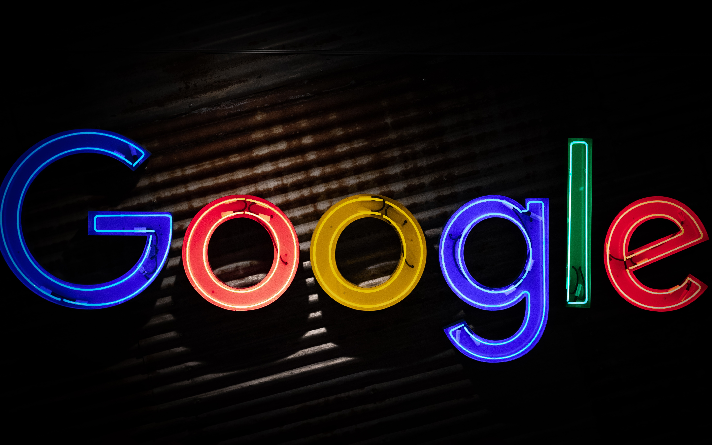
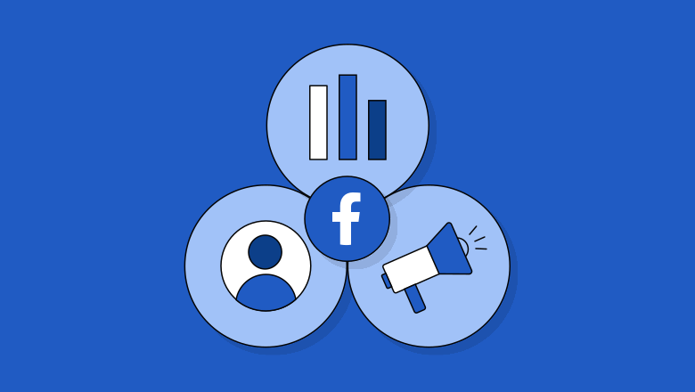

Google is an American multinational technology company focusing on artificial intelligence, online advertising, search engine technology, cloud computing, computer software, quantum computing, e-commerce, and consumer electronics. It's best known for its search engine, Google Search, and is considered one of the world's most valuable brands. Google was founded in 1998 by Larry Page and Sergey Brin. Google is an American multinational technology company focusing on artificial intelligence, online advertising, search engine technology, cloud computing, computer software, quantum computing, e-commerce, and consumer electronics. It's best known for its search engine, Google Search, and is considered one of the world's most valuable brands. Google was founded in 1998 by Larry Page and Sergey Brin. Google is an American multinational technology company focusing on artificial intelligence, online advertising, search engine technology, cloud computing, computer software, quantum computing, e-commerce, and consumer electronics. It's best known for its search engine, Google Search, and is considered one of the world's most valuable brands. Google was founded in 1998 by Larry Page and Sergey Brin.

People use Facebook to keep up with friends, upload an unlimited number of photos, share links and videos, and learn more about the people they meet. Facebook is made up of six primary components: personal profiles, status updates, networks (geographic regions, schools, companies), groups, applications and fan pages.People use Facebook to keep up with friends, upload an unlimited number of photos, share links and videos, and learn more about the people they meet. Facebook is made up of six primary components: personal profiles, status updates, networks (geographic regions, schools, companies), groups, applications and fan pages.People use Facebook to keep up with friends, upload an unlimited number of photos, share links and videos, and learn more about the people they meet. Facebook is made up of six primary components: personal profiles, status updates, networks (geographic regions, schools, companies), groups, applications and fan pages.
WhatsApp is a free, cross-platform messaging and calling app owned by Meta. It allows users to send text, voice messages, and video messages, make voice and video calls, and share various media like photos, documents, and locations. WhatsApp is known for its end-to-end encryption, ensuring privacy by making messages only accessible to the sender and recipient. WhatsApp is a free, cross-platform messaging and calling app owned by Meta. It allows users to send text, voice messages, and video messages, make voice and video calls, and share various media like photos, documents, and locations. WhatsApp is known for its end-to-end encryption, ensuring privacy by making messages only accessible to the sender and recipient. WhatsApp is a free, cross-platform messaging and calling app owned by Meta. It allows users to send text, voice messages, and video messages, make voice and video calls, and share various media like photos, documents, and locations. WhatsApp is known for its end-to-end encryption, ensuring privacy by making messages only accessible to the sender and recipient.